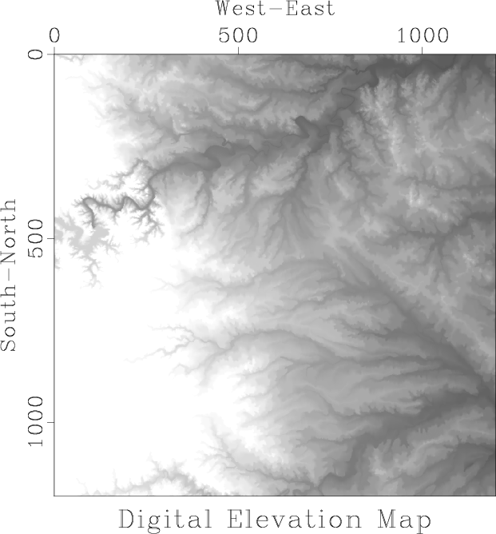
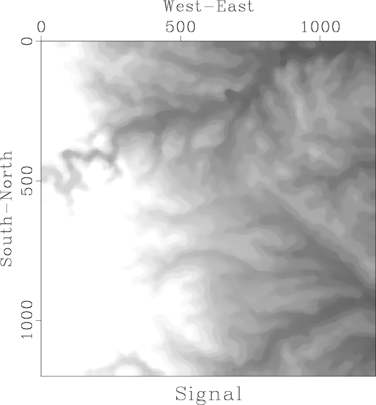
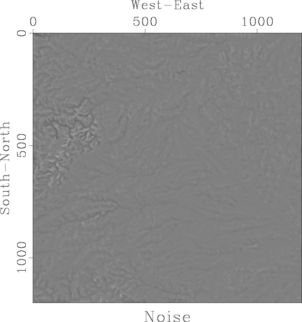

|
|
|
|
Homework 2 |
|
dem
Figure 2. Digital elevation map of the west Austin area. |  |
|---|---|
|
|
We return the digital elevation map of the West Austin Area, shown in Figure 2.
In this exercise, we will separate the data into ``signal'' and ``noise'' by applying running mean and median filters. The result of applying a running median filter is shown in Figure 3. Running median effectively smooths the data by removing local outliers.
|   |
|---|
|
ave,res
Figure 3. Data separated into signal (a) and noise (b) by applying a running median filter. |
|
|
The algorithm is implemented in program running.c.
/* Apply running mean or median filter */
#include <rsf.h>
static float slow_median(int n, float* list)
/* find median by slow sorting, changes list */
{
int k, k2;
float item1, item2;
for (k=0; k < n; k++) {
item1 = list[k];
/* assume everything up to k is sorted */
for (k2=k; k2 > 0; k2-) {
item2 = list[k2-1];
if (item1 >= item2) break;
list[k2] = item2;
}
list[k2] = item1;
}
return list[n/2];
}
int main(int argc, char* argv[])
{
int w1, w2, nw, s1,s2, j1,j2, i1,i2,i3, n1,n2,n3;
char *how;
float **data, **signal, **win;
sf_file in, out;
sf_init (argc,argv);
in = sf_input("in");
out = sf_output("out");
/* get data dimensions */
if (!sf_histint(in,"n1",&n1)) sf_error("No n1=");
if (!sf_histint(in,"n2",&n2)) sf_error("No n2=");
n3 = sf_leftsize(in,2);
/* input and output */
data = sf_floatalloc2(n1,n2);
signal = sf_floatalloc2(n1,n2);
if (!sf_getint("w1",&w1)) w1=5;
if (!sf_getint("w2",&w2)) w2=5;
/* sliding window width */
nw = w1*w2;
win = sf_floatalloc2(w1,w2);
how = sf_getstring("how");
/* what to compute
(fast median, slow median, mean) */
if (NULL == how) how="fast";
for (i3=0; i3 < n3; i3++) {
/* read data plane */
sf_floatread(data[0],n1*n2,in);
for (i2=0; i2 < n2; i2++) {
s2 = SF_MAX(0,SF_MIN(n2-w2,i2-w2/2-1));
for (i1=0; i1 < n1; i1++) {
s1 = SF_MAX(0,SF_MIN(n1-w1,i1-w1/2-1));
/* copy window */
for (j2=0; j2 < w2; j2++) {
for (j1=0; j1 < w1; j1++) {
win[j2][j1] = data[s2+j2][s1+j1];
}}
switch (how[0]) {
case 'f': /* fast median */
signal[i2][i1] =
sf_quantile(nw/2,nw,win[0]);
break;
case 's': /* slow median */
signal[i2][i1] =
slow_median(nw,win[0]);
break;
case 'm': /* mean */
default:
/* !!! ADD CODE !!! */
break;
}
}
}
/* write out */
sf_floatwrite(signal[0],n1*n2,out);
}
exit(0);
}
|
scons viewto reproduce the figures on your screen.
scons time.vplto display a figure that compares the efficiency of running median computations using the slow sorting from function median in program running.c and the fast quantile algorithm (library function sf_quantile ). Your goal is to make the algorithm even faster. Consider parallelization, reusing previous windows, other fast sorting strategies, etc.
from rsf.proj import *
# Download data
Fetch('austin-w.HH','bay')
# Convert format
Flow('dem','austin-w.HH','dd form=native')
# Display
def plot(title):
return '''
grey clip=250 allpos=y title="%s"
screenratio=1
''' % title
Result('dem',plot('Digital Elevation Map'))
# Program for running average
run = Program('running.c')
w = 30
# !!! CHANGE BELOW !!!
Flow('ave','dem %s' % run[0],
'./${SOURCES[1]} w1=%d w2=%d how=fast' % (w,w))
Result('ave',plot('Signal'))
# Difference
Flow('res','dem ave','add scale=1,-1 ${SOURCES[1]}')
Result('res',plot('Noise') + ' allpos=n')
#############################################################
import sys
if sys.platform=='darwin':
gtime = WhereIs('gtime')
if not gtime:
print "For computing CPU time, please install gtime."
else:
gtime = WhereIs('gtime') or WhereIs('time')
# slow or fast
for case in ('fast','slow'):
ts = []
ws = []
time = 'time-' + case
wind = 'wind-' + case
# loop over window size
for w in range(3,16,2):
itime = '%s-%d' % (time,w)
ts.append(itime)
iwind = '%s-%d' % (wind,w)
ws.append(iwind)
# measure CPU time
Flow(iwind,None,'spike n1=1 mag=%d' % (w*w))
Flow(itime,'dem %s' % run[0],
'''
( (%s -f "%%S %%U"
./${SOURCES[1]} < ${SOURCES[0]}
w1=%d w2=%d what=%s > /dev/null ) 2>&1 )
> time.out &&
(tail -1 time.out;
echo in=time0.asc n1=2 data_format=ascii_float)
> time0.asc &&
dd form=native < time0.asc | stack axis=1 norm=n
> $TARGET &&
/bin/rm time0.asc time.out
''' % (gtime,w,w,case),stdin=0,stdout=-1)
Flow(time,ts,'cat axis=1 ${SOURCES[1:%d]}' % len(ts))
Flow(wind,ws,'cat axis=1 ${SOURCES[1:%d]}' % len(ws))
# complex numbers for plotting
Flow('c'+time,[wind,time],
'''
cat axis=2 ${SOURCES[1]} |
transp |
dd type=complex
''')
# Display CPU time
Plot ('time','ctime-fast ctime-slow',
'''
cat axis=1 ${SOURCES[1]} | transp |
graph dash=0,1 wanttitle=n
label2="CPU Time" unit2=s
label1="Window Size" unit1=
''',view=1)
End()
|
|
|
|
|
Homework 2 |
{kind=link}
{kind=link}
{kind=link}